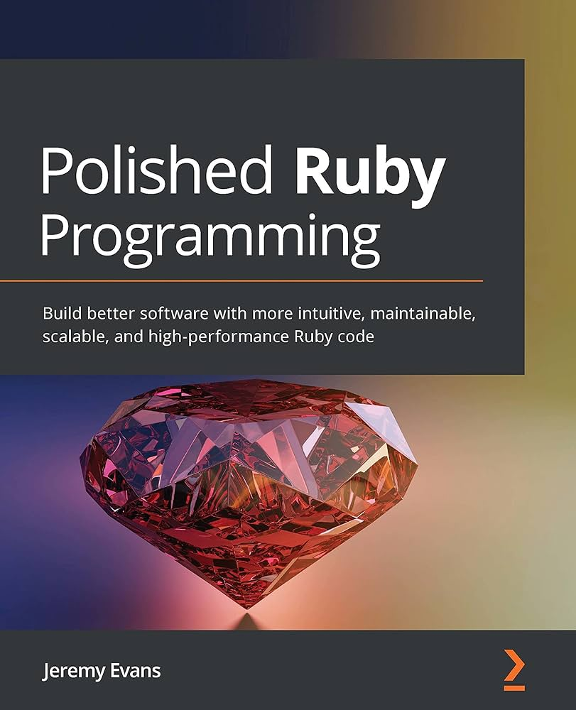

Book Review: Polished Ruby Programming
Book Information
Author: Jeremy Evans
Email: code@jeremyevans.net
Twitter: @jeremyevans0
Website: https://code.jeremyevans.net/polished-ruby-programming.html
Format: Paperback, 434 pages
Publication Date: July 16th, 2021
Publisher: Packt Publishing
Price: $51.72
ISBN: 978-1801072724
Description
Most successful Ruby applications become difficult to maintain over time as the codebase grows in size. Polished Ruby Programming provides you with recommendations and advice for designing Ruby programs that are easy to maintain in the long term. This book takes you through implementation approaches for many common programming situations, the trade-offs inherent in each approach, and why you may choose to use different approaches in different situations. You'll start by learning fundamental Ruby programming principles, such as correctly using core classes, class and method design, variable usage, error handling, and code formatting. Moving on, you'll learn higher-level programming principles, such as library design, use of metaprogramming and domain-specific languages, and refactoring. Finally, you'll learn principles specific to web application development, such as how to choose a database and web framework, and how to use advanced security features. By the end of this Ruby programming book, you'll have gained the skills you need to design robust, high-performance, scalable, and maintainable Ruby applications.
Reviews
Mastery through simplicity
Reviewer: ChuckE
Date: July 19, 2021
“Polished Ruby Programming”, by Jeremy Evans, is essential reading for seasoned ruby programmers who already know about the hidden superpowers of the ruby programming language, and want to know how to use them effectively. The author has a history of maintaining some of the most advanced, high-performance and featureful libraries in the ruby ecosystem (i.e. “sequel” and “roda”), and the book documents some of the considerations, trade-offs and hidden tricks that have emerged in his projects, in the form of contained examples, designed for the reader to follow. The book starts by analyzing the foundational building blocks of ruby (Integer, String, Array…), and consideration on where to use what and when, focusing of simplicity and maintainability, and then goes all the way while explaining how and when to use meta-programming, even putting on paper a smaller version of a plugin system similar to the one used in several projects of its author. Some of my favourite bits were how the author picked up on SOLID principles and how Ruby doesn’t apply them necessarily, and how that actually works for the better, thereby making the point about avoiding taking principles dogmatically (the “Single Responsibility Principle” applied to Array was particularly impressive to read), or a particular bit where the author argues how full test coverage means nothing. The book suffers from being too big (+400 pages), and some of its conceptual integrity gets lost in the last chapters, a small compendium about using ruby effectively with databases and web programming. Feels like the author has more to say about the subject, and those could be best served in a separate book. Overall, “Polished Ruby Programming” is an engaging and comprehensible read, and highly recommended for rubyists who want to up their ruby quality standard, learning from one of the most accomplished members of the community.
If you've achieved basic fluency in Ruby, this might be your next step
Reviewer: Christopher Haupt
Date: July 12, 2021
This book is a pretty useful distillation of core Ruby facts and techniques that are important to understand if you are moving from being able to "do things in Ruby" to being able to "do things efficiently and performantly in Ruby". Having participated in Ruby meetups/talks in which Jeremy presented, this book is the "async" version of that. Up to date for Ruby 3.x, the book moves through several parts, reinforcing your knowledge of the basics of the core language first, then moving on to extensibility (building libraries, metaprogramming, DSLs), before ending with the third section in the place where Ruby really became much more mainstream--web development. I found the examples to be pretty easy to understand, building up from the basics in small easy to consume pieces. There isn't a lot of filler code in here, instead focused examples with demonstrations of how things work. You can imagine Jeremy demoing these ideas to you as if you were in a virtual pairing session together. I appreciated that approachable style. If you are completed new to Ruby, this book may be a bit of a challenge. The book does indicate this is for intermediate+ readers. You may want to look at some introductory material first to ascertain you are comfortable with the base language and its flexibility. If you are an advanced Rubyist, I suspect you'll still get something out of this text, even if just confirming your core understanding and seeing how things work in the latest version of Ruby.